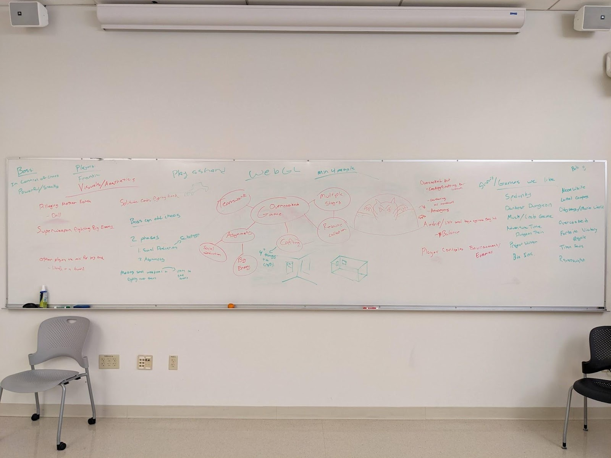
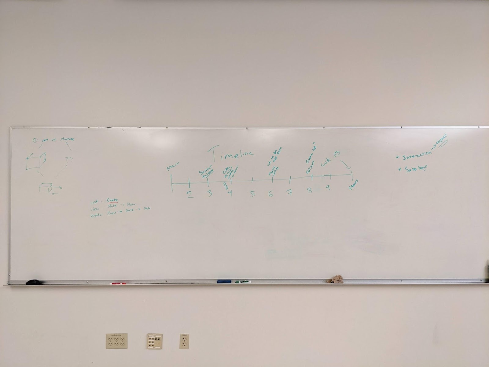

Pending responses from Marcelo and Nick.
Game concept: To what extent did your game concept change from initial concept to what you implemented? If it did change, how did it change and why?
When we had our first real meeting, we talked pretty extensively about what we wanted to make. Our aim was to expand on a wide variety of ideas, and then narrow them down to something that everyone was passionate about. We also knew that scope creep was a serious problem when working with games, and we tried to make a vision for our game that we could easily expand upon without having to redo any work. The concept we ended up with (asymmetric crafting party game) remained stable over the quarter thanks to that initial approach, because everyone was excited about the unique premise. However, things like aesthetics shifted over time, but we planned for that and built our game to be easily adaptable.
[Tyler] I distinctly remember that I listed out a bunch of concepts that we thought would be cool or we desperately wanted to have in the game. Then, after we talked about it for like an hour, and tried to combine them, we listed out those same concepts, and tried to take the ones that really stuck.
Design: How does your final project design compare to the initial design, and what are the reasons for the differences, if any?
Most of our design changes were more narrowing down to a decision than changing from one choice to another. We chose to leave some things up in the air in our initial planning (e.g. aesthetics, how exactly crafting would work) so we could come back to them once more of the code was in place and we had a better feel for the rest of the game.
[Killian] I think we initially planned the game to have a lot more player and boss interactions along with more visual map elements that we did not have time to implement, which we sort of expected.
[Will] One visual element that we didn’t end up doing was more dynamic lighting (rooms would have to be lit by torches or colored crystals which could be moved/extinguished). We have the systems in place to support this feature, but the performance wasn’t great so we removed the option before the demo.
[Sean] Putting out the lights was one of the boss sabotages that we came up with early on. However, incorporating lighting into the map and gameplay was more of an afterthought for much of the quarter (the lights just spun around the map) until we set fixed locations for them in the map the day of the demo. We could’ve had crystals around the map that could be turned on and off, but even that would require designing models, coding an entity, and deciding where to place the crystals around the map.
Schedule: How does your final schedule compare with your projected schedule, and what are the reasons for the differences, if any? (You should be able to glean this from your status reports.)
[Sean] We were pretty ahead of schedule, at least for the first half of the quarter. Towards the latter half, even though we were also somewhat ahead of this initial timeline, it still felt like we were behind somehow. I think it’s because we underestimated what needed to be done. We had everything set up by week 9—game phases, logic for crafting and harvesting items—but there was no actual full game that we could test and balance until the days up until the demo.
[Tyler] Oh man our schedule changed so much. We got everything that we expected to get done, but we did SO much in the last like week? I fully expected that we would be pushing a game that didn’t even have combat, but finishing the actual engine was so much more of a challenge than adding combat that we managed to crank combat out easy peasy.
[Will] I think one reason for the differences was just that we didn’t know yet what was possible with cannon-es and loading models at planning time. We hadn’t yet chosen to use the glTF format, for instance. There were also some slow weeks when some of us were busy.
Describe your development environment. What tools did you use? What was your build workflow? If you supported multiple platforms (e.g., MacOS and/or Linux), how did you support making your project work on all platforms? Do you have any tips or suggestions for future groups for their development environment?
Tools: cannon-es, express.js, gl-matrix, ws, TypeScript, Prettier, npm-run-all, nodemon, ESLint, esbuild, WebGL, Web Audio API, WebSockets API, DOM, npm, GitHub
We wrote our server and client code in TypeScript. We used cannon-es for physics, express.js and ws (server)/WebSockets API (client) for networking, gl-matrix for linear algebra operations, WebGL for rendering, and a script running periodically on Nick’s user account to deploy the project to the CSE 125 server. We used the DOM to render the UI, and Web Audio API to add reverb and spatial audio.
We tried to support multiple platforms—not just MacOS and Linux, but also iOS and Android—and overall, we didn’t have to think much about it. There were still plenty of issues that we encountered, mostly with WebGL being different on different GPUs and even browsers. One example was when the demo machines’ GPUs were so high-spec that they revealed an issue we hadn’t encountered on our laptops. We fixed them if we could, but otherwise we just pushed it aside as we didn’t want to sink too much time investigating them if they weren’t being demoed.
We used Prettier and ESLint to auto-format our code so we didn’t have to think about making our code look consistent and clean. Fortunately, they’re both fairly configurable because Nick was really insistent on using tab indentation.
The JavaScript ecosystem has way too many options for building things.
We arbitrarily chose esbuild to build both the client and the server.
Its configuration is nice, and it allows us to directly embed assets
(e.g. glTF JSON objects) in our script, or get a URL that can be used
to load it at runtime, without having to install more dependencies.
Because passing all its config options as command line args can get
verbose, we put it all inside scripts defined in npm’s package.json,
so we could just run npm run watch to start the server
and re-build the client or server when changes are detected, then
restart the server using nodemon. We ran into a compatibility issue
where it did not work on Windows because & was a
Bash-specific feature, so we had to use another package, npm-run-all.
[Sean] Overall, I’m happy that we went with
TypeScript instead of C++ or even Rust. JavaScript is flexible enough
for any programming style we want, allowing us to develop quickly
(albeit not according to software engineering principles), and
TypeScript’s type system (when used properly, i.e. without using
as) has been able to prevent many bugs. We didn’t have to
deal with memory or platform issues, the project was incredibly easy
to set up on our machines and the demo machines, and JavaScript’s
tolerance of errors made it less likely to crash during the demo.
[Sean] It would be cool see groups in the future use WebGPU. I would’ve preferred trying it out and being one of the first groups to use it, but there are even fewer resources for WebGPU, and it currently doesn’t work on Firefox, Safari, Linux, or iOS.
What group mechanics decisions worked out well, and which ones (if any) did not? Why?
We separated the group into a Networking group and a Graphics group, and filtered people out based on experience, so each group felt balanced. This was super helpful for the beginning of the project, as there was so much to do in each camp that didn’t interact, and separating them helped contain what we were thinking about. However, as we got to around week 6 or 7, we removed the concepts of the groups entirely, just because everything was getting so connected that it wasn’t needed anymore.
[Tyler] “Each group felt balanced” means that Nick and Sean were on different teams, and keeping my ass on a team with someone that knew what they were doing lmao. After I got up to speed on Typescript and the project got bigger, the teams weren’t necessary.
[Kenzo] I think that having people that are experienced like Will and Sean on the Graphics group helps a lot as they are able to teach me and explain the code so that I can keep up with the project. They also helped me by giving me hints and debugging tips on how to implement the features of the game.
[Sean] Early on, we decided not to do branching. This was good earlier on because we were still setting up the project, and any changes we had to make were very structural and would affect other parts of the codebase. However, as everything settled down, we started running into issues, especially one disaster when I implemented crafting, not knowing that Tyler already had done so.
[Tyler] I think I expected the graphical side of the project to be easier than the networking, but it was the opposite. The networking side (that I worked on!) wasn’t nearly as bad as the graphics side looked to be. There is a lot of bias here though, I was working on the networking side for a while and only looked into the graphics side for fun, and looking into someone else’s code doesn’t make it look easy, that’s for sure.
[Kenzo] I thought that implementing the game logic would be difficult, however when we already have the game environment set up, implementing the game logic would be more straightforward.
Which aspects of the implementation were more difficult than you expected, and which were easier? Why?
[Tyler] I think I expected the graphical side of the project to be easier than the networking, but it was the opposite. The networking side (that I worked on!) wasn’t nearly as bad as the graphics side looked to be. There is a lot of bias here though, I was working on the networking side for a while and only looked into the graphics side for fun, and looking into someone else’s code doesn’t make it look easy, that’s for sure.
[Kenzo] I thought that implementing the game logic would be difficult, however when we already have the game environment set up, implementing the game logic would be more straightforward.
[Sean] Early on, we decided not to do branching. This was good earlier on because we were still setting up the project, and any changes we had to make were very structural and would affect other parts of the codebase. However, as everything settled down, we started running into issues, especially one disaster when I implemented crafting, not knowing that Tyler already had done so.
Which aspects of the project are you particularly proud of? Why?
[Killian] I personally was proud of myself for making so many 3D models since I did not have a lot of 3D modeling experience prior to this class and was honestly afraid of tackling it as an artist. But it was a good learning experience in the end and I’m very glad I did it.
[Tyler] I’m super happy that we managed to get a fun asymmetrical game. That was a part of the design that I super pushed for, and making a silly asymmetrical game was something I really wanted. It’s also designed in such a way that the difference in balance isn’t too bad! Even if the boss is too strong, there’s clear ways to get around it, and vice versa with the players.
[Kenzo] I am proud of the particle systems in the game. Even though I lack the experience on the graphics side, I was able to slowly implement the basic particle system from scratch, and later Sean and Will would modify the Particles to make it cooler and spawn in the right place.
[Sean] I really like the shadows. I didn’t know they were possible on the web, but they’re a lot simpler than I expected. Will was the one who initially implemented everything, but I learned how it worked trying to debug why the shadows felt broken, and I think the different light colors and shadows really helped make our game look unique.
What was the most difficult software problem you faced, and how did you overcome it (if you did)?
TODO
In developing the media content for your project, you relied upon a number of tools ranging from the underlying graphics libraries to modeling software. And you likely did some troubleshooting to make it all work. So that students in future years can benefit from what you learned, please detail your tool chain for modeling, exporting, and loading meshes, textures, and animations. Be specific about the tools and versions, any non-obvious steps you had to take to make it work (e.g., exporting from the tool in a specific manner), and any features or operations you specifically had to avoid — in other words, imagine that you were tutoring someone on how to use the toolchain you used to make it all work. Also, for the tools you did use, what is your opinion of them? Would you use them again, or look elsewhere? Are there any tools that you used but, looking back, you would avoid?
Pipeline:
Blender: create and texture model, export as glTF (separate mode to get a .gltf and a .bin file)
Either apply modifiers before exporting or check the box to include modifiers in export options.
Also make sure you are not exporting hidden layers. If there are hidden layers, make sure to only export visible ones if you want to only export what you’re currently seeing.
Copy the glTF files into the repository and create an index.ts file (example: anvil/index.ts) which imports the data
Make sure esbuild or your alternative bundler knows what content type to treat these files as. We used the --loader option to load .gltf files as JSON and .bin files as external files.
Parse the glTF data—Sean wrote a parser according to the glTF specification which runs in the browser to load mesh and texture info into WebGL buffers
Since our game runs via web, the client can just download the glTF data when it starts running.
Send the data to WebGL to render
WebGL works like OpenGL with a few additional restrictions, e.g. no geometry shaders. As with OpenGL, different devices/graphics cards have different implementations so sometimes we saw unexpected behavior on certain machines. For example, we had a bug on the demo machines where random pixels were getting discarded because their alpha values were interpolated(?) to slightly below 1.0. We solved it by simply lowering the alpha cutoff in our shader but it shows that it’s important to test on different devices.
Also, remember to unbind/clean up EVERYTHING related to WebGL at the end of a function/when you’re done with it: buffers, vertex arrays, texture units, etc. Otherwise you get weird errors because some WebGL object is still hanging around and your next draw call turns out to be in some invalid state.
For those who used a networking library (e.g., RakNet or Boost), a physics library (e.g., Rapier or Bullet), an audio library (e.g., SFML or SoLoud), or a GUI library (e.g., imgui or nanovg), which libraries did you use and would you use them again if you were starting over knowing what you know now? Describe any lessons you learned using it (problems that you had to troubleshoot and how you addressed them) for future groups who may use it. If you did not use a library for any of those modules, judging from the experiences of the groups that did, would you have used it in retrospect?
Physics: cannon-es
Gave us very easy rigid body motion, and we didn’t need to fight it a lot* in order to get things like player movement
We did have to fight it to get player movement feeling right, and forcing held items in front of players is a bit janky.
Some issues we encountered:
Raycasts only test for intersections along a given line segment (the ray doesn’t extend infinitely). This behavior is probably more convenient in many cases, but it wasn’t initially obvious.
The library only checks for collisions at an object’s new location, not along the line segment from its previous location to its new location. This behavior makes it easy to clip through walls when an object is moving quickly. We worked around this limitation by making our walls thick and ensuring that players and objects generally don’t move super fast.
The library has a triangle mesh shape class which works well by itself, and we initially used it to create a collision mesh for the game map. However, we found that trimeshes seemed only able to collide with spheres and other trimeshes, not boxes, cylinders, etc. Another issue was that trimeshes don’t have an “inside” and “outside”—the library can tell if an object is inside of a box and push it out, but if an object is inside of a trimesh then it just sits there. Due to these issues, we chose to just manually create a collision mesh in Blender and parse it into a bunch of box shapes.
We basically got audio and UI for free because our game runs in browsers (Web Audio API and HTML/CSS respectively).
If you used an implementation language other than C++, describe the environments, libraries, and tools you used to support development in that language. What issues did you run into when developing in that language? Would you recommend groups use the language in the future? If so, how would you recommend groups best proceed to make it as straightforward as possible to use the language? And what should groups avoid?
We used Typescript with esbuild, Prettier, and a little bit of ESLint. We also ran a script periodically on Nick’s user account that built and deployed the latest commit to the CSE 125 server.
Some issues that we ran into regarding Typescript was simply the fact that several of the members of our group didn’t know typescript! Tyler didn’t know anything regarding the language, and Kenzo knew a bit, so getting them up to speed took several weeks.
[Tyler] It was definitely a struggle for the first couple weeks, having to both learn abut a whole new language and begin the back-end work for the largest project I’ve ever done, but Typescript wasn’t so bad itself, and having Nick and Sean to help teach Typescript while working on individual sections really helped.
[Kenzo] I did my CSE 110 class with a bit of JavaScript which helped with learning Typescript. Will and Sean taught me a lot about the syntax and the different functions that allowed me to implement some of the features in the game. I think that Typescript is a good language to use because it allows us to define the variables’ types and prevents us from getting type errors. So overall, I would recommend future groups to use Typescript.
How many lines of code did you write for your project? (Do not include code you did not write, such as library source.) Use any convenient mechanism for counting, but state how you counted.
using git ls-files | grep '\.js' | xargs wc -l
| Language | Lines of code |
|---|---|
| TypeScript | 9821 |
| GLSL | 900 |
| CSS | 855 |
| HTML | 50 |
| Total | 11626 |
What lessons about group dynamics did you learn about working in such a large group over an extended period of time on a challenging project?
We learned a lot about how people interact, and how vital communication is between people in groups. We had a few times where people would get upset at each other, either because of stress or miscommunication, and being able to apologize, compromise, and talk to each other about what we were feeling and thinking made us closer friends and much better partners.
[Tyler] I found that, throughout the quarter, I was giving ideas and directing people a lot more than I thought I would be? Each person had a very different role and a very different skillset, and I thought it was super cool watching us all work around that
[Kenzo] I think that communication and the initiative to reach out to teammates are the most important skills. The codebase kept on growing at a significant rate and there is a lot of code that I wouldn’t understand, but by just asking your friends to explain it to you saved a lot of time and helped me to keep updated on what’s happening.
Looking back over the past 10 weeks, is there anything you would do differently, and what would you do again in the same situation?
Our issue tracking could’ve had some work. It was unclear when someone was working on something, so there were a few issues where people’s work just got completely overwritten by the earlier push. Something like assigning people to items on Github could’ve helped quite a bit, but we just never implemented it.
[Tyler] We never had branches in our github! We almost always worked on the main github branch, and just hoped that we weren’t overriding work. Eventually we got *one* branch for a more experimental combat, but even that overwrote some work because of the merge. [it was mine :( ]
[Killian] I would have liked to start modeling a bit earlier in the quarter and should have prepared myself with more Blender tutorials before the course started. Making the final map a week before the showcase was definitely not ideal.
[Kenzo] I agree with Tyler, sometimes by just working on the main branch would overwrite some of our code. So branching would be helpful.
[Will] I think it turned out alright even without proper issue tracking and branching, but we certainly could have saved ourselves some pain by doing those things. The main issues were doing duplicate work and sometimes not merging correctly; the merging could still be an issue with branches but at least all of the code would always be available in the remote.
Which courses at UCSD do you think best prepared you for CSE 125?
[Will] Definitely CSE 167 for graphics (how OpenGL/WebGL work) and CSE 169 for understanding transformations on models and basic physics simulations. Maybe CSE 110 for some object-oriented programming practices and design patterns. While these and some other courses gave me a good engineering foundation, I think the best preparation for me was working on projects outside of class—that’s how I learned a lot of TypeScript, Git, code management, etc.
[Tyler] Love myself some CSE 169. Not necessarily because of the actual computer animations, necessarily, but it also forces you to work with a longer project, and it helped me with organizing my own code, and on working on a larger project/code base. CSE 110 was also (kindof) helpful, as it’s another group based class, but I would also recommend TDAC 1. Being able to communicate about stuff is vital, and at least for me, theater was a great way to push me out of my comfort zone regarding that sort of thing.
[Killian] VIS 110k because it introduced me to Blender but it also depends on the professor.
[Kenzo] I hoped that I took CSE 167 before taking this class so I can understand more on the graphics side, however I think that CSE 110 prepared me for this class as it taught me how to do Git and learn how to communicate with my group mates.
[Sean] Honestly, most of my preparation came from project experience. I already had a lot of experience with HTML/CSS from designing websites, making animations and games, and creating userstyles. Making a voxel renderer in WebGPU really helped me understand graphics concepts that I could apply to WebGL, and it made me enjoy writing shader code.
What were the most valuable things that you learned in the class?
[Tyler] I think that just knowing how willing people are to help was so important. So much was able to happen the first few weeks because I was like “Hey can we set up a meeting and work on this”, and solidly the entire group came to help. It was very touching!
[Killian] That 3D modeling is not that scary!
[Kenzo] Being able to communicate about your problems will be very helpful and don’t be scared to ask for help.
[Will] A lot of cool stuff about WebGL, and also that it’s important to make sure we know what other team members are working on.
[Sean] I learned a lot about WebGL, like techniques for casting shadows and how the WebGL state machine works. Will be pretty useful for making web games in the future.
Please post four final screenshots of your game on your group pages for posterity. I will display them on the group web page.
For the pizza celebration after the demos, what do you think about doing it in the B220 lab? (I originally thought to avoid any more time in the lab :-) Some students pointed out that if we do it in the lab, then people can play each other's games. Other students said that they were exhausted and just sitting and having pizza was enough.
after the pizza party, some people did go to the lab and play each others’ games
[Tyler] Honestly, I didn’t have any negative feelings about the lab? I actually really liked the lab, and working in B220 wasn’t a dragging experience for me. Making playing other games’ voluntary would be nice though. Maybe you could expand into the lab to the side of it?
What advice/tips/suggestions would you give students who will take the course next year?
[Tyler] Try to make friends with your group mates!! Have lunch/dinner together, go get boba, figure out if they prefer blunt conversation or delicate conversation.
[Kenzo] Do pair coding sessions / ask your teammate to code together with you. It will reduce a lot of pressure and impostor syndrome. Also makes coding more fun and interactive!
Do you have any suggestions for improving the course?
Maybe a mixer during week 5 or 6 would be fun. Teams could meet each other there and compare notes.
[Tyler] I totally agree! I would’ve loved to talk with other groups to compare notes and see what they had cooked up. It would’ve probably made the impostor syndrome go crazy, but it totally could’ve helped.
[Sean] Up until the final week, it felt like our groups were disconnected from each other in class. It would’ve been nice to get to know the other groups earlier on. On the other hand, it might only make us feel more behind, especially during the latter half of the quarter when it feels like our games should be more complete than they are.
Any other comments or feedback?
Man, the diversity in the types of games that people created was insane! Everyone made vastly different games, and they all felt SO unique.